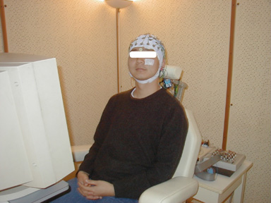
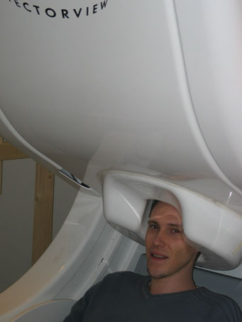

Electrophysiological recordings
Neuronal Recording
An EPSP that reaches an apical dendrite activates non-specific cation channels and thus elicits a depolarization of the cell membrane. The variation of the electrical potential depends of the importance of the EPSP and the resistivity of the membrane (highest resistivity if numerous IPSP). For intracellular recording, the electrical potential relies on the comparison between the membrane cell and the extracell environment. Thus, the variation of the electrical potential reflects roughly the product of the importance of EPSP by the resistivity. If we use an electrode in the extracellular environment (extracell recording) but close to cell, the variation of the electrical potential will depend on the importance of EPSP and the resistance of the extracellular environment. One difference is the amplitude of the response, intracell recording shows membrane depolarization and thus the amplitude is in millivolt, whereas for extracell recording, the amplitude is in microvolt. But, most important, the intracell recording signal is always positive whereas the extracell recording shows different polarities according to the electrode position. If the electrode 'looks' at where current enters, the signal is negative, whereas if it looks at where the current leaves, the signal is positive.
A manoelectrode located on the cortex record field potentials, i.e. the sum of extracell potentials elicited by the synchronous firing of neurons. Field potentials varies according to, at least, 4 characteristics:
i) the amplitude decreases according to the distance (1/d^2) between the electrode and the neural population
ii) when EPSP arrive to the surface layers, the electrode see positive charges 'leaving' and thus record a negative potential, whereas a deep electrode see positive charges 'approaching' and this record a positive potential and vis versa when EPSP arrive to the deep layers.
iii) polarities are reversed for IPSP
iv) it exist a continuum between surface and deep electrodes
MEG/EEG
The electrical activity of neuronal populations, and thus magnetic concurrent fields, can be recorded using macro-detectors on the scalp surface. One can distinguish primary currents, which are related to the movement of ions, and volume currents that correspond to passive ohmic currents settled up in the surrounding medium. Recorded variations correspond to the sum of ionic current in the extracellular space.
EEG
The ElectroEncephalography method measures neuronal activity using several electrodes placed on the scalp (fig 1). EEG recording corresponds to the electrical potential difference between two electrodes: either between one active electrode on the scalp and one reference electrode located far from the recording site, or between two active electrodes. Amplitudes (20 to 100 microvolt) and frequencies (1 to 40hz) vary according to subjects' activity. According to the position of electrodes and cortical current, the signal can be positive or negative.

Figure 1. Subject sitting in front of a computer ready for an EEG experiment.
On his head, a 64 electrodes cap recording the electrical activity of neurons.
MEG
The fluctuating electrical currents measured with EEG also produce a magnetic field over the head. Because the same neuronal population elicits EEG and MEG components, both techniques measure roughly the same thing. However, MEG spatial maps are quite different and techniques are more complementary than redundant (see "neural sources"). Looking at map patterns, one can see that EEG and MEG tend to present perpendicular patterns due to the difference in the type of sources.
The measured neuromagnetic field is extremely weak, about 10^-12 tesla, which is weaker than the urban's magnetic background (10^-7 T) and the earth's magnetic field (10^-4 T). Therefore, in contrast with EEG, MEG measurements need a suppression of any fluctuating magnetic background and highly sensitive detectors. The suppression of the fluctuating magnetic background is performed by the use of a shielded room (exclude external magnetic fields) and a measure of magnetic gradient within the shielded room. Detectors are complex coils (SQUID Superconducting Quantum Interference Device) that measure the weak magnetic fluxes. One can roughly summarize the concept of a SQUID as a superconduction ring interrupted by two Josephson junctions that limit the flow of the supercurrent, making easier to exploit flux quantization for the measurement of the magnetic field. The magnetic flux is measured through the SQUID loop since current over the Josephson's junctions is a periodic function of this magnetic flux. Measures are based on the fact that the voltage over the junctions is approximately a linear function of the magnetic flux. The signal is carried to SQUID via a flux transformer. A flux transformer is also a superconducting loop. Thus, magnetic fluxes induce a current in it that is a direct function of the magnetic density, with no signal loss. Modern MEG devices uses several transformers for a given locations, usually one for the x direction and one for the y direction perpendicular to z magnetic flux, which is the magnetic flux perpendicular to the surface of the helmet.

Figure 2. Me ! in the 306 channels vectorview MEG system
of the Low Temperature Laboratory in Helsinki
Neural Sources
If the primary source and the surrounding conductivity distribution are known, the resulting electric potential and magnetic fields can be calculated from Maxwell's equations. Looking at EEG or MEG data is known as the electromagnetic inverse problem, i.e. dealing with the deduction of the source currents responsible for the measured field. Indeed, such problem has no unique solution (von Helmholtz, 1853) and source models are used to approximate the solution. The optimal solution is usually found by fitting (least-squares method) the theoretical and measured field patterns to get the equivalent current dipole (ECD).
Both EEG and MEG provide a projection of primary current distribution on the respective lead fields, i.e. the sensitivity distribution of the detectors, and measure weighted integrals of this primary current distribution. In general, MEG gives a better spatial information than EEG. First, MEG is sensitive to dipoles oriented radially to the skull only. This is due to the symmetry and cancellations that take place in perfectly spherical conductors (of course in the real word, the head of our subjects is not perfectly spherical) and there is only one MEG signal for a tangential dipole. Second, EEG measures both radial and tangential sources leading to more complex interpretation of the sources. Indeed, because tangential electrical sources tend to be located in the sulci and radial one on the gyri, MEG and EEG are complementary techniques for a full investigation of neural sources. And third, the electrical lead field is affected by the conductivity of the skull and the scalp leading to blurred signal whereas the magnetic field is not altered by such inhomogeneities.
Reference: For a full review of mathematical methods on the direct and inverse problem as well as a full description of MEG device see: Hämäläinen, M., Hari, R., Limoniemi, R.J., Knuutila, J. & Lounasmaa, O.V. (1993). Magnetoencephalography - theory, instrumentation, and applications to noninvasive studies of the working human brain. Reviews of Modern Physics, 65, 413-497.